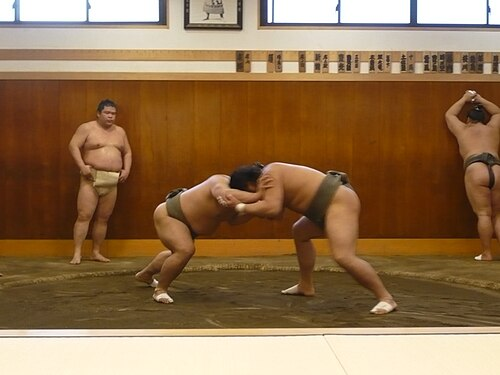
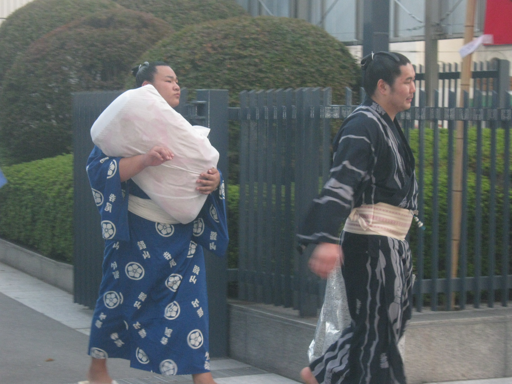

Who are the Rikishi?
A rikishi, also known as a sumotori or, more colloquially, as osumosan, is a sumo wrestler. While the term does apply to any sumo wrestler, it's mostly used to refer to professional wrestlers. Professional rikishi have to follow the long-standing traditions of sumo, which consists of codes, customs, and rules that apply to how they live and dress (although the dress part is according to the rikishi's rank). Technically it is incorrect call rikishi "wrestlers," as sumo has little in common with Greco-Roman wrestling and is more akin to judo or aikido, but I do refer to them as "wrestlers" to those who are new to sumo to help them grasp the concept better. There is also a special term to refer to rikishi who are in the two highest divisions of juryo and makuuchi, which is sekitori. The sekitori have significantly more status and privilege over their lower division counterparts, not to mention that the sekitori also get a salary instead of an allowance.
